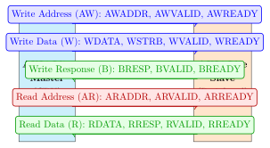
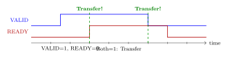
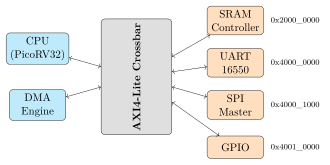

Chapter 5: Bus Protocols and Interconnects¶
A bus protocol is a set of rules that defines how two hardware blocks communicate — who drives which signal, how they handshake, and what happens when one is slower than the other. Getting this right is critical: every IP block in this project communicates through a bus.
Analogy: Bus Protocol as a Phone Call Convention
Imagine two people agreeing on a calling protocol: “I say your name, you say ‘ready’, I deliver my message, you say ‘received’, then we hang up.” AXI4 works similarly, but with hardware signals instead of words. Both sides must follow the protocol exactly — one wrong signal and the communication hangs forever.
5.1 Overview of Bus Protocols Used in This Project¶
| Protocol | Origin | Channels | Best Used For |
|---|---|---|---|
| AXI4 | ARM (AMBA 4) | 5 channels | High-bandwidth DRAM & DMA |
| AXI4-Lite | ARM (AMBA 4) | 5 channels | CSR registers, simple peripherals |
| AXI4-Stream | ARM (AMBA 4) | 1 channel | Streaming data (video, DSP, DMA) |
| APB3/4 | ARM (AMBA 3/4) | 1 channel | Low-power slow peripherals |
| Wishbone B4 | OpenCores | 1 channel | Simple open-source designs |
| TileLink | UC Berkeley | 5 channels | RISC-V ecosystem (Rocket, BOOM) |
5.2 AXI4-Lite — The Register Access Bus¶
AXI4-Lite is the simplest of the AXI family. It is used for accessing configuration and status registers (CSRs) in peripherals. Every peripheral in the IP library (UART, SPI, I2C, FIR filter, etc.) exposes its registers through an AXI4-Lite slave port.
5.2.1 The Five Channels¶
AXI4-Lite has five independent channels, each with a valid/ready handshake. The master (e.g., the CPU) initiates transactions. The slave (e.g., the UART peripheral) responds.

5.2.2 The Valid/Ready Handshake¶
The most important concept in AXI is the valid/ready handshake. A transfer occurs only when both VALID and READY are high on the same clock edge:

Key Handshake Rule
The master asserts VALID when it has data ready. The slave asserts READY when it can accept data. The master must not deassert VALID once asserted (until the transfer completes). The slave can deassert READY at any time. This asymmetry is by design.
5.2.3 A Complete AXI4-Lite Write Transaction¶
task axil_write(input [3:0] addr, input [31:0] data);
@(posedge clk);
// Assert write address channel
s_axi_awaddr <= addr;
s_axi_awvalid <= 1'b1;
// Assert write data channel simultaneously
s_axi_wdata <= data;
s_axi_wstrb <= 4'hF; // All byte enables active
s_axi_wvalid <= 1'b1;
// Ready to accept write response
s_axi_bready <= 1'b1;
// Wait until slave accepts address AND data
wait(s_axi_awready && s_axi_wready);
@(posedge clk);
s_axi_awvalid <= 1'b0;
s_axi_wvalid <= 1'b0;
// Wait for write response (BRESP)
wait(s_axi_bvalid);
@(posedge clk);
s_axi_bready <= 1'b0;
endtask
5.2.4 BRESP and RRESP — Response Codes¶
After every write, the slave sends a 2-bit response code:
| Code | Meaning | When to see it |
|---|---|---|
2’b00 |
OKAY | Normal successful transaction |
2’b01 |
EXOKAY | Exclusive access OK (not used in AXI4-Lite) |
2’b10 |
SLVERR | Slave error (address not mapped) |
2’b11 |
DECERR | Decode error (address not decoded) |
5.3 AXI4-Stream — The Data Pipeline Bus¶
AXI4-Stream is used for high-speed, point-to-point data flow where there are no addresses — just a continuous stream of data words. It is used for:
-
DSP pipelines: ADC samples -> FIR filter -> FFT -> output
-
Video: pixel data from image sensor -> processing -> display
-
DMA data movement: memory -> network DMA engine -> Ethernet
// AXI4-Stream Slave Input
input logic s_axis_tvalid, // Data valid
output logic s_axis_tready, // Can accept data
input logic [DATA_WIDTH-1:0] s_axis_tdata, // The data
input logic s_axis_tlast, // Last in packet
input logic [DATA_WIDTH/8-1:0] s_axis_tkeep, // Byte enables
// AXI4-Stream Master Output
output logic m_axis_tvalid,
input logic m_axis_tready,
output logic [DATA_WIDTH-1:0] m_axis_tdata,
output logic m_axis_tlast
The FIR filter in rtl-templates/dsp/fir_filter.sv has AXI4-Stream on both its input (sample in) and output (filtered sample out):
fir_filter #(
.N_TAPS(32),
.DATA_WIDTH(16),
.COEFF_WIDTH(16),
.SYMMETRIC(1)
) u_fir (
.clk (clk),
.rst_n (rst_n),
// Input: raw ADC samples
.s_axis_tdata (adc_data),
.s_axis_tvalid(adc_valid),
.s_axis_tready(adc_ready),
.s_axis_tlast (1'b0), // Continuous stream, no packets
// Output: filtered samples
.m_axis_tdata (fir_out),
.m_axis_tvalid(fir_valid),
.m_axis_tready(fft_ready)
);
5.4 Wishbone B4 — The Open-Source Classic¶
Wishbone is the bus used by the OpenCores community and the Caravel Harness (Efabless MPW tapeout infrastructure, historical: Efabless ran the programme until 2025). It has a simpler, single-channel interface compared to AXI:
// Wishbone Master outputs / Slave inputs
output logic wb_cyc_o, // Bus cycle in progress
output logic wb_stb_o, // Strobe (this cycle is for this slave)
output logic wb_we_o, // Write enable
output logic [31:0] wb_adr_o, // Address
output logic [31:0] wb_dat_o, // Write data
output logic [3:0] wb_sel_o, // Byte select
// Wishbone Slave outputs / Master inputs
input logic wb_ack_i, // Acknowledge (transfer complete)
input logic wb_err_i, // Error
input logic [31:0] wb_dat_i // Read data
A Wishbone transfer completes in one cycle when CYC & STB & ACK are all 1. The ao486 x86 core uses Wishbone as its native bus (see ip-library/processors/x86/ao486_wb_wrapper.sv).
5.5 APB — Advanced Peripheral Bus¶
APB is the simplest AMBA bus. It has a 2-cycle minimum transaction and is designed for low-power, low-speed peripherals. SoCs typically use APB for slow devices like RTC, watchdog timers, and GPIO controllers, connected to the AXI fabric through an APB bridge.
input logic pclk, // Clock
input logic presetn, // Reset
input logic [31:0] paddr, // Address (from master)
input logic psel, // Select this slave
input logic penable, // Enable (2nd cycle)
input logic pwrite, // Write (1) / Read (0)
input logic [31:0] pwdata, // Write data
output logic [31:0] prdata, // Read data (from slave)
output logic pready, // Slave ready
output logic pslverr // Slave error
5.6 The Crossbar Interconnect¶
When multiple masters (e.g., CPU + DMA) need to access multiple slaves (e.g., SRAM + UART + SPI), a crossbar is needed. The project provides ip-library/bus/axi4_lite_crossbar.core:

5.7 Register Maps — How Software Talks to Hardware¶
Every peripheral exposes its internal state through registers mapped at fixed addresses. Software (running on the CPU) reads and writes these addresses to control the hardware. The register map is the most important interface document for any IP block.
| Offset | Name | Access | Reset | Description |
|---|---|---|---|---|
| 0x00 | CTRL | RW | 0x0000 | Control: bit 0=enable, bit 1=loopback |
| 0x04 | STATUS | RO | 0x0060 | Status: bit 0=busy, bits 6:5=TX empty |
| 0x08 | BAUD | RW | 0x0036 | Baud divisor (default = 54 -> 115200) |
| 0x0C | DATA | RW | — | Write=TX FIFO, Read=RX FIFO |
| 0x10 | IRQ_EN | RW | 0x0000 | Interrupt enables, bit per source |
These register maps are generated automatically from YAML specifications using scripts/python/regmap_gen.py (covered in Chapter 11).
5.8 Formal Properties for Bus Protocols¶
The file verification/formal/uart/uart_axil_props.sv contains assertions that mathematically prove the AXI4-Lite interface is implemented correctly. For example:
// Once the master asserts AWVALID, it must hold it
// until the slave asserts AWREADY (handshake rule)
property awvalid_stable;
@(posedge clk) disable iff (!rst_n)
(s_axi_awvalid && !s_axi_awready) |=>
s_axi_awvalid; // Must still be valid next cycle
endproperty
assert property (awvalid_stable)
else $error("AWVALID violated: deasserted before AWREADY");
This is not a simulation test — it is a formal mathematical proof that covers all possible input sequences. We discuss formal verification fully in Chapter 7.
5.9 Summary¶
-
Every IP block communicates through a bus protocol with defined signals and handshakes.
-
AXI4-Lite: 5-channel, valid/ready handshake, for control registers.
-
AXI4-Stream: streaming data with no addresses.
-
Wishbone: simple, open-source, used by the historical Caravel/Efabless tapeout flow.
-
APB: slowest and simplest, for low-power peripherals.
-
A crossbar connects multiple masters to multiple slaves.
-
Register maps define how software controls hardware.